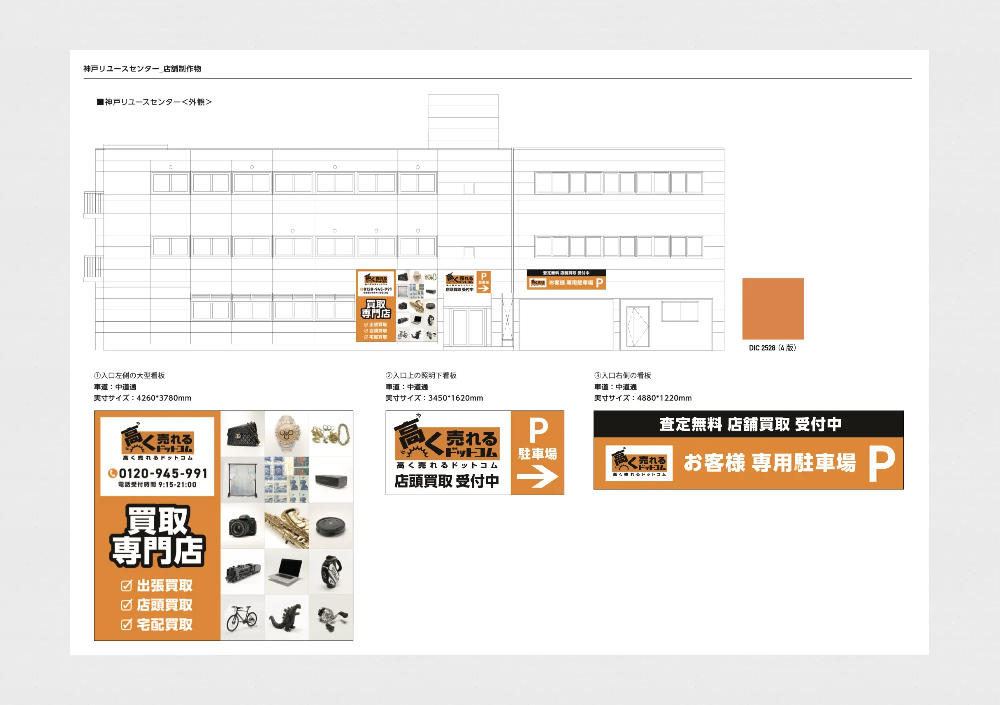
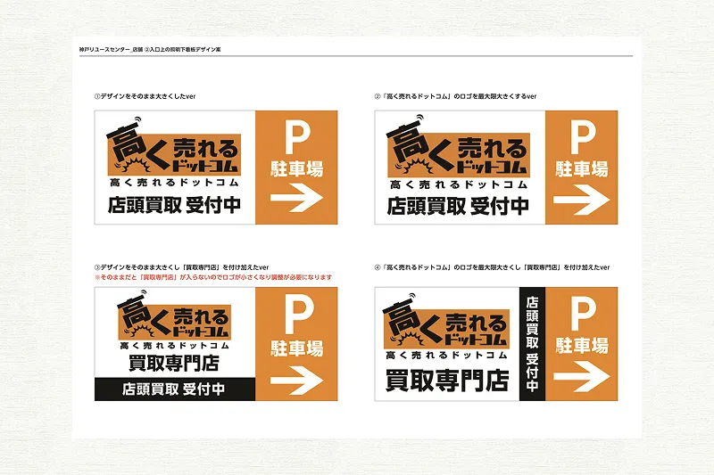
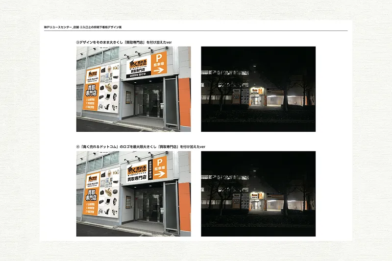

安心感の可視化と
迷わせない店舗誘導
Webでの知名度がある一方で、実店舗の前を通る通行人に対して「何が売れるのか」「どこから入ればいいのか」が瞬時に伝わらず、来店が少ないことが課題でした。また、買取店特有の「中が見えない不安」や「強引に買い取られないか」という心理的ハードルを下げ、新規顧客が気軽に立ち寄れる店構えを作る必要がありました。
ブランドカラーのオレンジを基調に、取り扱い品目を実写画像で分かりやすくグリッド配置しました。これにより、一目で「自分の持っている物が売れる」と確信を持てる設計にしています。また、店頭買取 受付中という文字と駐車場への誘導矢印を大きく配置。車での来店客に対しても迷わず入店できるスムーズな導線を作り上げました。
DESIGN CONCEPT
遠距離・中距離を意識した情報の階層化
看板としての機能を果たすため、離れた場所からはオレンジのブランドカラーを出しつつ、具体的な買取品目や電話番号が読み取れるよう情報の優先順位を整理しました。要素を詰め込みすぎず、余白を活かしたレイアウトにすることで、歩道のみならず、車道や遠方からの視認性も追求しています。また、案を一つに絞らず、複数の可能性をパターン化して提示し、関係者と議論を重ねながら、設置環境に対して最適なレイアウトを追求しました。

親しみやすさと専門性の両立
白背景をベースに、多彩な買取カテゴリーを整然と並べることで、「どんなジャンルの専門知識も備えている」というプロフェッショナルな印象を演出しました。Web広告やサイトとビジュアルのトーンを統一することで、ネットで調べてきたお客様が実店舗を見た際にも、一貫した安心感を感じられるようブランディングの整合性を意識しています。
